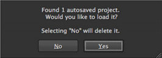

Autosave 函数每隔 5 分钟创建一个临时项目保存文件，但是您可以调整 强制项目自动保存后 在 偏好 > 一般 对话框。请参阅 附录 A: 偏好 欲了解更多信息。
启动时，应用程序扫描自动保存的项目，并显示自动保存是否存在的提示。

单击 是 加载自动保存或 没有 忽略并删除它。
打开项目还使用自动保存功能。如果自动保存比保存的项目文件更新，将显示提示:
单击 是 加载自动保存文件或 没有 加载原始项目文件。
注意: 单击 没有 在这种情况下，不会删除自动保存的项目。
|
|